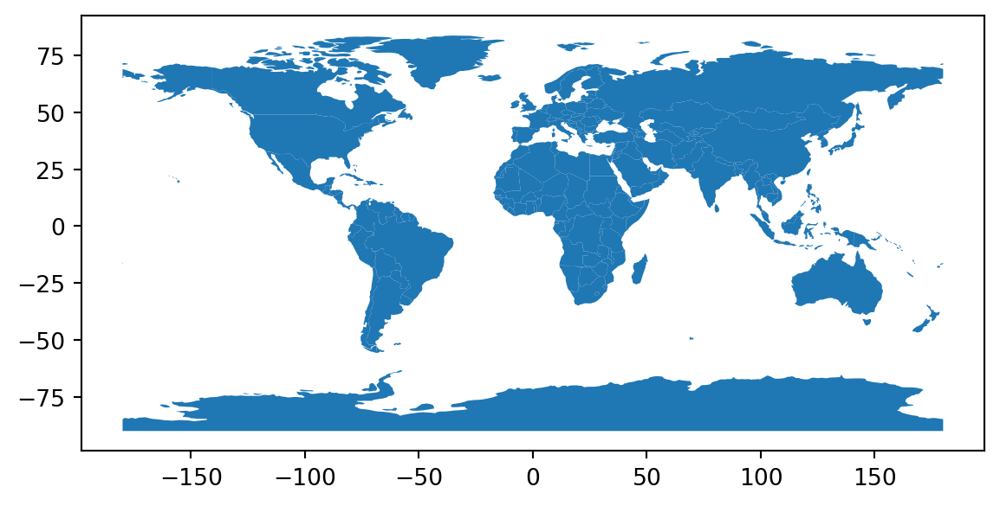
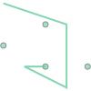
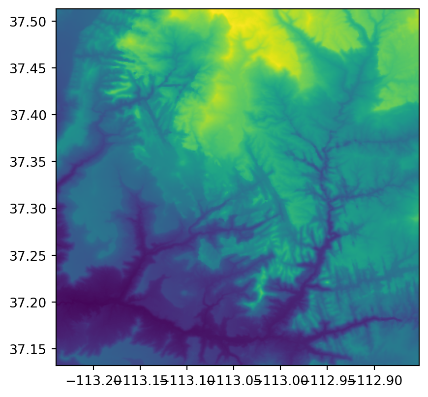

import geopandas as gpd2 Geographic data in Python
2.1 Introduction
This chapter introduces key Python packages and data structures for working with the two major types of spatial data, namely:
- shapely and geopandas — for working with vector layers
- rasterio and xarray — for working with rasters
As we will see in the code chunks presented later in this chapter, shapely and geopandas are related:
- shapely is a “low-level” package for working with individual vector geometry objects
- geopandas is a “high-level” package for working with geometry columns (
GeoSeriesobjects), which internally contain shapely geometries, and vector layers (GeoDataFrameobjects)
While geopandas (including its shapely dependency), at present, comprises a ubiquitous comprehensive approach for working with vector layers in Python, this is not the case for rasters. Work with rasters in Python is much less unified. There are several alternative packages, each with its own advantages and disadvantages. We focus on the two most comprehensive and fundamental packages, namely:
- rasterio — a spatial-oriented package, focused on “simple” raster formats (such as GeoTIFF), representing a raster using a combination of a
numpyarray, and a metadata object (dict) specifying the spatial referencing of the array - xarray — A general-purpose package for working with labeled arrays, thus advantageous for processing “complex” raster format (such as NetCDF), representing a raster using its own native classes, namely
xarray.Datasetandxarray.DataArray
2.2 Vector data
2.2.1 Introduction
When introducing the packages for working with vector layers in Python, we are going to go from the complex class (vector layer), through the intermediate (geometry column), to the simple (geometry). As we will see, the three classes are hierarchical, meaning that the complex encompasses the simple:
- A vector layer (class
GeoDataFrame) contains a geometry column (classGeoSeries) as one of the columns - A geometry column (class
GeoSeries) is composed of individual geometries (classshapely)
The first two classes (GeoDataFrame and GeoSeries) are defined in package geopandas. The third class is defined in package shapely, which deals with individual geometries, and comprises on of the dependencies of the geopandas package.
2.2.2 Vector layers
The typical data structure for vector data is a vector layer. There are several methods to work with vector layers in Python, ranging from low-level (e.g., fiona) to high-level (geopandas). In this book, we focus on geopandas.
Before we begin, we need to import the geopandas package, conventionally as gpd:
We will also limit the maximum number of printed rows to four, to save space, using the "display.max_rows" option of pandas:
import pandas as pd
pd.set_option("display.max_rows", 4)Most often, we import an existing vector layer from a file, such as a Shapefile (.shp) or a GeoPackage (.gpkg) file.
path existsgdf = gpd.read_file("data/world.gpkg")The result is a GeoDataFrame:
type(gdf)geopandas.geodataframe.GeoDataFrameThe GeoDataFrame class is an extension of the DataFrame class. Thus, we can treat a vector layer as a table and process it using the ordinary, i.e., non-spatial, pandas methods. For example, the following expression creates a subset with just the country name and the geometry (see below):
gdf = gdf[["name_long", "geometry"]]
gdf| name_long | geometry | |
|---|---|---|
| 0 | Fiji | MULTIPOLYGON (((-180.00000 -16.55522, -179.917... |
| 1 | Tanzania | MULTIPOLYGON (((33.90371 -0.95000, 31.86617 -1... |
| ... | ... | ... |
| 175 | Trinidad and Tobago | MULTIPOLYGON (((-61.68000 10.76000, -61.66000 ... |
| 176 | South Sudan | MULTIPOLYGON (((30.83385 3.50917, 31.24556 3.7... |
177 rows × 2 columns
The following expression creates a subset based on a condition, including just "Egypt":
gdf[gdf["name_long"] == "Egypt"]| name_long | geometry | |
|---|---|---|
| 163 | Egypt | MULTIPOLYGON (((36.86623 22.00000, 36.69069 22... |
Finally, to get a sense of the spatial component of the vector layer, it can be plotted using the .plot method, as follows:
gdf.plot()<AxesSubplot:>
or using .hvplot to get an interactive plot:
# import hvplot.pandas
# gdf.hvplot(title='Hello world', geo=True, hover_cols=['name_long'], legend=False).opts(bgcolor='lightgray', active_tools=['wheel_zoom']) This way, we can also add background tiles:
# gdf.hvplot(tiles='OSM', alpha=0.5, geo=True, title='Hello world', hover_cols=['name_long'], legend=False).opts(active_tools=['wheel_zoom']) 2.2.3 Geometry columns
One of the columns in a GeoDataFrame is a geometry column, of class GeoSeries. The geometry column contains the geometric part of the vector layer, e.g., the POLYGON or MULTIPOLYGON geometries of the 177 countries in gdf:
gdf["geometry"]0 MULTIPOLYGON (((-180.00000 -16.55522, -179.917...
1 MULTIPOLYGON (((33.90371 -0.95000, 31.86617 -1...
...
175 MULTIPOLYGON (((-61.68000 10.76000, -61.66000 ...
176 MULTIPOLYGON (((30.83385 3.50917, 31.24556 3.7...
Name: geometry, Length: 177, dtype: geometryThe geometry column also contains the spatial reference information, if any (see below).
Many of the spatial operators, such as calculating the centroid, buffer, or bounding box of each feature, in fact involve just the geometry. Therefore, for example, the following expressions give exactly the same result, a GeoSeries with country bounding boxes:
gdf.bounds| minx | miny | maxx | maxy | |
|---|---|---|---|---|
| 0 | -180.000000 | -18.287990 | 179.999990 | -16.020882 |
| 1 | 29.339998 | -11.720938 | 40.316590 | -0.950000 |
| ... | ... | ... | ... | ... |
| 175 | -61.950000 | 10.000000 | -60.895000 | 10.890000 |
| 176 | 23.886980 | 3.509172 | 35.298007 | 12.248008 |
177 rows × 4 columns
gdf["geometry"].bounds| minx | miny | maxx | maxy | |
|---|---|---|---|---|
| 0 | -180.000000 | -18.287990 | 179.999990 | -16.020882 |
| 1 | 29.339998 | -11.720938 | 40.316590 | -0.950000 |
| ... | ... | ... | ... | ... |
| 175 | -61.950000 | 10.000000 | -60.895000 | 10.890000 |
| 176 | 23.886980 | 3.509172 | 35.298007 | 12.248008 |
177 rows × 4 columns
Another useful property of the geometry column is the geometry type (see below). Note that the types of geometries contained in a geometry column (and, thus, a vector layer) are not necessarily the same. Accordingly, the .type property returns a Series (of type string), rather than a single value:
gdf["geometry"].type0 MultiPolygon
1 MultiPolygon
...
175 MultiPolygon
176 MultiPolygon
Length: 177, dtype: objectTo summarize the occurrence of different geometry types in a geometry column, we can use the pandas method called value_counts:
gdf["geometry"].type.value_counts()MultiPolygon 177
dtype: int64In this case, we see that the gdf layer contains Polygon and MultiPolygon geometries.
2.2.4 Geometries
Each element in the geometry column is a geometry object, of class shapely. For example, here is one specific geometry selected by implicit index (that of Canada):
gdf["geometry"].iloc[3]and here is a specific geometry selected based on the "name_long" attribute:
gdf[gdf["name_long"] == "Egypt"]["geometry"].iloc[0]
The shapely package is compatible with the Simple Features standard. Accordingly, seven types of geometries are supported. The following section demonstrates creating a shapely geometry of each type, from scratch or using a string in the WKT format as input. To do so , we need to import the shapely.wkt module and geometry types:
import shapely.wkt as wkt
from shapely.geometry import PointCreating a point object is as simple as:
point = Point(5,2)
pointThen, we use the wkt.loads (stands for “load a WKT string”) to transform a WKT string to a shapely geometry object. Here is an example of a POINT geometry:
point = wkt.loads("POINT (5 2)")
point
Here is an example of a MULTIPOINT geometry:
from shapely.geometry import MultiPoint
multipoint = MultiPoint([(5,2), (1,3), (3,4), (3,2)])
multipointmultipoint = wkt.loads("MULTIPOINT ((5 2), (1 3), (3 4), (3 2))")
multipointHere is an example of a LINESTRING geometry:
from shapely.geometry import LineString
linestring = LineString([(1,5), (4,4), (4,1), (2,2), (3,2)])
linestringlinestring = wkt.loads("LINESTRING (1 5, 4 4, 4 1, 2 2, 3 2)")
linestringHere is an example of a MULTILINESTRING geometry:
from shapely.geometry import MultiLineString
linestring = MultiLineString([[(1,5), (4,4), (4,1), (2,2), (3,2)], [(1,2), (2,4)]])
linestring
multilinestring = wkt.loads("MULTILINESTRING ((1 5, 4 4, 4 1, 2 2, 3 2), (1 2, 2 4))")
multilinestringHere is an example of a POLYGON geometry:
from shapely.geometry import Polygon
linestring = Polygon([(1,5), (2,2), (4,1), (4,4), (1,5)], [[(2,4), (3,4), (3,3), (2,3), (2,4)]])
linestring
polygon = wkt.loads("POLYGON ((1 5, 2 2, 4 1, 4 4, 1 5), (2 4, 3 4, 3 3, 2 3, 2 4))")
polygon
Here is an example of a MULTIPOLYGON geometry:
from shapely.geometry import MultiPolygon
multipolygon = MultiPolygon([Polygon([(1,5), (2,2), (4,1), (4,4), (1,5)]),
Polygon([(0,2), (1,2), (1,3), (0,3), (0,2)])])
multipolygon
multipolygon = wkt.loads("MULTIPOLYGON (((1 5, 2 2, 4 1, 4 4, 1 5)), ((0 2, 1 2, 1 3, 0 3, 0 2)))")
multipolygon
And, finally, here is an example of a GEOMETRYCOLLECTION geometry:
from shapely.geometry import GeometryCollection
multipoint = GeometryCollection([MultiPoint([(5,2), (1,3), (3,4), (3,2)]),
MultiLineString([[(1,5), (4,4), (4,1), (2,2), (3,2)], [(1,2), (2,4)]])])
multipoint
geometrycollection = wkt.loads("GEOMETRYCOLLECTION (MULTIPOINT (5 2, 1 3, 3 4, 3 2), LINESTRING (1 5, 4 4, 4 1, 2 2, 3 2))")
geometrycollection
shapely geometries act as atomic units of vector data, as spatial operations on a geometry return a single new geometry. For example, the following expression calculates the difference between the buffered multipolygon (using distance of 0.1) and itself:
multipolygon.buffer(0.2).difference(multipolygon)
Internally, many spatial operations on a geometry column (or a vector layer) are basically iterations where the operator is applied on all geometries, one by one, to return a new geometry column (or layer) with the combined results.
As demonstrated above, a shapely geometry object is automatically evaluated to a small image of the geometry (when using an interface capable of displaying it, such as a Jupyter Notebook). To print the WKT string instead, we can use the print function:
print(linestring)POLYGON ((1 5, 2 2, 4 1, 4 4, 1 5), (2 4, 3 4, 3 3, 2 3, 2 4))We can determine the geometry type using the .geom_type property, which is a string:
linestring.geom_type'Polygon'Finally, it is important to note that raw coordinates of shapely geometries are accessible through a combination of the .coords, .geoms, .exterior, and .interiors, properties (depending on the geometry type). These access methods are useful for when we need to develop our own spatial operators for specific tasks. For example, the following expression returns the coordinates of the polygon geometry exterior (note that the returned object is iterable, thus enclosed in a list to return all coordinates at once):
list(polygon.exterior.coords)[(1.0, 5.0), (2.0, 2.0), (4.0, 1.0), (4.0, 4.0), (1.0, 5.0)]2.3 Raster data
2.3.1 Introduction
As mentioned above, working with rasters in Python is less organized around one comprehensive package (such as the case for vector layers and geopandas). Instead, there are several packages providing alternative (subsets of methods) of working with raster data.
The two most notable approaches for working with rasters in Python are provided by the rasterio and xarray packages. As we will see shortly, they differ in their scope and underlying data models. Specifically, rasterio represents rasters as numpy arrays associated with a separate object holding the spatial metadata. The xarray package, however, represents rasters with the native DataArray object, which is an extension of numpy array designed to hold axis labels and attributes, in the same object, together with the array of raster values.
Both packages are not comprehensive in the same way as geopandas is. For example, when working with rasterio, on the one hand, more packages may be needed to accomplish (commonly used) tasks such as zonal statistics (package rasterstats) or calculating topographic indices (package richdem). On the other hand, xarray was extended to accommodate spatial operators missing from the core package itself, with the rioxarray and xarray-spatial packages.
In the following two sections, we introduce the two well-established packages, rasterio and xarray, which form the basis for most raster functionality in Python. Using any of the add-on packages, or the extensions, should be straightforward, once the reader is familiar with the basics.
2.3.2 Using rasterio
To work with the rasterio package, we first need to import it. We also import numpy, since (as we will see shortly), the underlying raster data are stored in numpy arrays. To effectively work with those we therefore expose all numpy functions. Finally, we import the show function from the rasterio.plot sub-module for quick visualization of rasters.
import numpy as np
import rasterio
from rasterio.plot import show
import subprocessRasters are typically imported from existing files. When working with rasterio, “importing” a raster is actually a two-step process:
- First, we open a raster file “connection”, using
rasterio.open - Second, we read raster values from the connection using the
.readmethod
This kind of separation is analogous to basic Python functions for reading from files, such as open and .readline to read from a text file. The rationale is that we do not always want to read all information from the file into memory, which is particularly important as rasters size can be larger than RAM size. Accordingly, the second step (.read) is selective. For example, we may want to read just one raster band rather than reading all band.
In the first step, to create a file connection, we pass a file path to the rasterio.open function. For this example, we use a single-band raster representing elevation in Zion National Park:
src = rasterio.open("data/srtm.tif")To get a first impression of the raster values, we can plot it using the show function:
show(src);
The “connection” object contains the raster metadata, that is, all of the information other than the raster values. Let us examine it:
src.meta{'driver': 'GTiff',
'dtype': 'uint16',
'nodata': 65535.0,
'width': 465,
'height': 457,
'count': 1,
'crs': CRS.from_epsg(4326),
'transform': Affine(0.0008333333332777796, 0.0, -113.23958321278403,
0.0, -0.0008333333332777843, 37.512916763165805)}Importantly, we can see:
- The raster data type (
dtype) - Raster dimensions (
width,height, andcount, i.e., number of layers) - Raster Coordinate Reference System (
crs) - The raster affine transformation matrix (
transform)
The last item (i.e., transform) deserves a few more words. To position a raster in geographical space, in addition to the CRS we must specify the raster origin (\(x_{min}\), \(y_{max}\)) and resolution (\(delta_{x}\), \(delta_{y}\)). In the transform matrix notation, these data items are stored as follows:
Affine(delta_x, 0.0, x_min,
0.0, delta_y, y_max)Note that, by convention, raster y-axis origin is set to the maximum value (\(y_{max}\)) rather than the minimum, and, accordingly, the y-axis resolution (\(delta_{y}\)) is negative.
The .read method of a raster file connection object is used to read the last but not least piece of information: the raster values. Importantly, we can read:
- A particular layer, passing a numeric index (as in
.read(1)) - A subset of layers, passing a
listof indices (as in.read([1,2])) - All layers (as in
.read())
Note that the layer indices start from 1 contrary to the Python convention of the first index being 0.
The resulting object is a numpy array, with either two or three dimensions:
- Three dimensions, when reading all layers or more than one layer (e.g.,
.read()or.read([1,2])). In such case, the dimensions pattern is(layers, rows, columns) - Two dimensions, when reading one specific layer (e.g.,
.read(1))
For example, let us read the first (and only) layer from the srtm.tif raster, using the file connection object src:
s = src.read(1)
sarray([[1728, 1718, 1715, ..., 2654, 2674, 2685],
[1737, 1727, 1717, ..., 2649, 2677, 2693],
[1739, 1734, 1727, ..., 2644, 2672, 2695],
...,
[1326, 1328, 1329, ..., 1777, 1778, 1775],
[1320, 1323, 1326, ..., 1771, 1770, 1772],
[1319, 1319, 1322, ..., 1768, 1770, 1772]], dtype=uint16)2.3.3 Using xarray
…
import xarray as xrReading source:
x = xr.open_dataset("data/absolute_v5.nc")
x<xarray.Dataset>
Dimensions: (time: 12, lon: 72, lat: 36)
Coordinates:
* time (time) float64 0.5 1.5 2.5 3.5 4.5 5.5 6.5 7.5 8.5 9.5 10.5 11.5
* lon (lon) float32 -177.5 -172.5 -167.5 -162.5 ... 167.5 172.5 177.5
* lat (lat) float32 -87.5 -82.5 -77.5 -72.5 -67.5 ... 72.5 77.5 82.5 87.5
Data variables:
tem (time, lat, lon) float32 -26.6 -27.4 -25.2 ... -29.4 -29.3 -29.4
Attributes:
CDI: Climate Data Interface version ?? (http://mpim...
Conventions: CF-1.6
history: Wed May 20 16:30:15 2020: ncap2 -O -s time=tim...
CDO: Climate Data Operators version 1.9.3 (http://m...
NCO: 4.7.2
nco_openmp_thread_number: 1
reference: Osborn TJ, Jones PD, Lister DH, Morice CP, Sim...
licence: Open Government Licence http://www.nationalarc...x["tem"]<xarray.DataArray 'tem' (time: 12, lat: 36, lon: 72)>
array([[[-26.599998, -27.4 , ..., -27.4 , -27.5 ],
[ -4.7 , -4.4 , ..., -6.4 , -5.6 ],
...,
[-29.3 , -29.199999, ..., -29.5 , -29.3 ],
[-30.099998, -30.099998, ..., -30.699999, -30.5 ]],
[[-38.3 , -39.2 , ..., -39.399998, -39.399998],
[-11.099999, -10.599999, ..., -13.4 , -12.3 ],
...,
[-29.4 , -29.4 , ..., -29.599998, -29.5 ],
[-30.5 , -30.599998, ..., -31. , -30.8 ]],
...,
[[-36.899998, -37.7 , ..., -37.899998, -37.899998],
[-12. , -11.7 , ..., -14.099999, -13.099999],
...,
[-22.3 , -22.199999, ..., -22.5 , -22.5 ],
[-24.4 , -24.5 , ..., -24.6 , -24.699999]],
[[-26.699999, -27.4 , ..., -27.5 , -27.599998],
[ -5.2 , -4.9 , ..., -6.9 , -6.1 ],
...,
[-27. , -27.099998, ..., -27.099998, -27.099998],
[-29.3 , -29.5 , ..., -29.3 , -29.4 ]]], dtype=float32)
Coordinates:
* time (time) float64 0.5 1.5 2.5 3.5 4.5 5.5 6.5 7.5 8.5 9.5 10.5 11.5
* lon (lon) float32 -177.5 -172.5 -167.5 -162.5 ... 167.5 172.5 177.5
* lat (lat) float32 -87.5 -82.5 -77.5 -72.5 -67.5 ... 72.5 77.5 82.5 87.5
Attributes:
long_name: CRU_Global_1961-1990_Mean_Monthly_Surface_Temperature_Climato...
units: celsiusPlot:
x["tem"].plot(col="time", col_wrap=4)<xarray.plot.facetgrid.FacetGrid at 0x7fba80947970>
2.4 Coordinate Reference Systems
gdf.crs<Geographic 2D CRS: EPSG:4326>
Name: WGS 84
Axis Info [ellipsoidal]:
- Lat[north]: Geodetic latitude (degree)
- Lon[east]: Geodetic longitude (degree)
Area of Use:
- name: World.
- bounds: (-180.0, -90.0, 180.0, 90.0)
Datum: World Geodetic System 1984 ensemble
- Ellipsoid: WGS 84
- Prime Meridian: Greenwichsrc.crsCRS.from_epsg(4326)2.5 Exercises
…